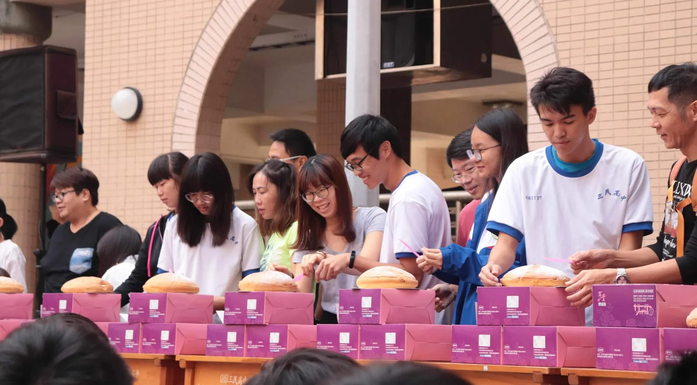

封面故事
三民高中創校 25 年了，聽師長們說，每年會有「切蛋糕」的慶生典禮，每班導師與班長一同切下對三民高中的祝福。

大傳社主持
而在切蛋糕的這天，也有大傳社開場主持、歌喉盃比賽、熱舞社表演。


歌喉盃
歌喉盃是給有意願在校慶上表演自己的歌唱能力，利用歌唱與全校師生分享自己喜愛歌曲的歌唱比賽。


意外插曲：在學長上台測試麥克風時頻頻出錯，場面十分尷尬 xDD，大傳就出來滅火了。
大傳學姊：誰要講笑話～我們班會長：我我我

熱舞社演出
不多說，直接上照片。


嗑派
最後回教室大家嗑光波士頓派 (❁´◡`❁)

HBD
三民高中，生日快樂。🥳
新的 LED 面板趕在慶生前順利裝上去。